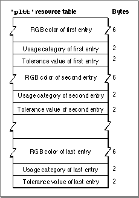

The Palette Resource
The palette resource contains the color values and the usage and tolerance constants; in effect, it is a series ofColorInfostructures without the private fields. The Palette Manager adds its private fields both to the header and to eachColorInfostructure when it creates a palette structure from the'pltt'resource. The format of a palette resource is shown in Figure 1-1.Figure 1-1 Format of a palette resource
